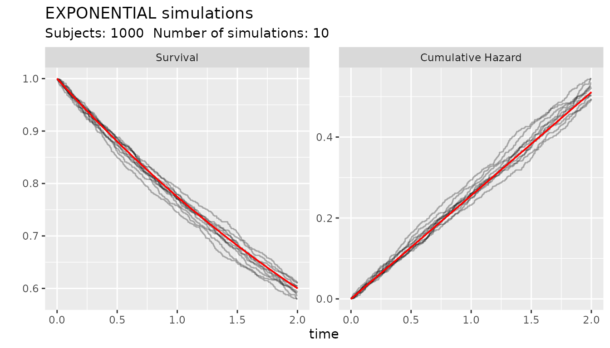
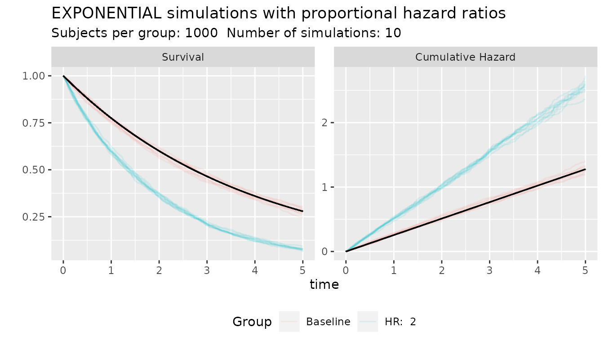
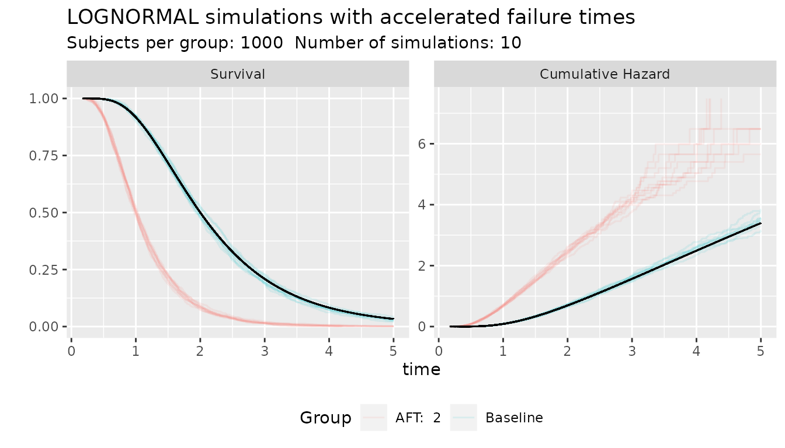

Simulation of survival times
Source:vignettes/simulation_distributions.Rmd
simulation_distributions.RmdIntroduction
Following Bender, Augustin, and Blettner
(2003) and Leemis (1987),
simulation of survival times is possible if there is function that
invert the cumulative hazard (\(H^{-1}\)), Random survival times for a
baseline distribution can be generated from an uniform distribution
between 0-1 \(U\) as: \[ T = H^{-1}(-log(U)) \] For a survival
distribution object, this can be accomplished with the function
rsurv(s_object, n) which will generate n
number of random draws from the distribution s_object. All
objects of the s_distribution family implements a function that inverts
the survival time with the function invCum_Hfx()
The function ggplot_survival_random() helps to graph
Kaplan-Meier graphs and cumulative hazard of simulated times from the
distribution
s_obj <- s_exponential(fail = 0.4, t = 2)
ggplot_survival_random(s_obj, timeto =2, subjects = 1000, nsim= 10, alpha = 0.3)
Generation of Proportional Hazard times
Survival times with hazard proportional to the baseline hazard can be simulated \[ T = H^{-1}\left(\frac{-log(U)}{HR}\right) \] where \(HR\) is a hazard ratio.
The function rsurv_hr(s_object, hr) can generate random
number with hazards proportionals to the baseline hazard. The function
produce as many numbers as the length of the hr vector. for example:
s_obj <- s_exponential(fail = 0.4, t = 2)
group <- c(rep(0,500), rep(1,500))
hr_vector <- c(rep(1,500),rep(2,500))
times <- rsurvhr(s_obj, hr_vector)
plot(survfit(Surv(times)~group), xlim=c(0,5))
The function ggplot_survival_hr() can plot simulated data
under proportional hazard assumption.
s_obj <- s_exponential(fail = 0.4, t = 2)
ggplot_survival_hr(s_obj, hr = 2, nsim = 10, subjects = 1000, timeto = 5)
Generation of Acceleration Failure Times
Survival times with accelerated failure time to the baseline hazard can be simulated \[ T = \frac{H^{-1}(-log(U))}{AFT}\] where \(AFT\) is a acceleration factor, meaning for example an AFT of 2 have events two times quicker than the baseline
The function rsurv_aft(s_object, aft) can generate
random numbers accelerated by an AFT factor. The function produce as
many numbers as the length of the aft vector. for example:
s_obj <- s_lognormal(scale = 2, shape = 0.5)
ggplot_survival_aft(s_obj, aft = 2, nsim = 10, subjects = 1000, timeto = 5)
In this example, the scale parameter of the Log-Normal distribution represents the mean time and it this simulation and accelerated factor of 2 move the average median from 2 to 1
If the proportional hazard and the accelerated failure is combined
and accelerated hazard time is generated. This can be accomplished with
the function rsurvah() function and the
ggplot_random_ah() functions